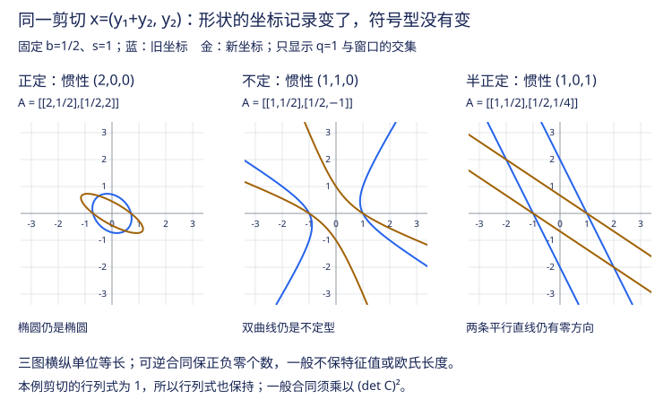

高代 VI · 二次型与内积空间
高等代数的收官页，两条线在此会师：二次型（合同标准形、正定性——多元极值判别的代数根据）与内积空间（长度、角度、正交——几何回归代数）。顶点是实对称矩阵的谱定理，以及它通往机器学习的直通车：主成分分析与奇异值分解。
1. 二次型与合同
定义 \(n\) 元二次型 \(f(x) = x^\top A x\)（约定 \(A\) 对称——任何二次型的矩阵可对称化）。可逆线性替换 \(x = Cy\) 后矩阵变为
定义（合同） \(B \simeq A \iff \exists\) 可逆 \(C:\ B = C^\top A C\)。（对照：相似是 \(T^{-1}AT\)——相似 = 换基看变换，合同 = 换坐标看二次型，第三种标准形理论开张。）
化标准形三法：配方法（万能）；初等变换法（对 \(A\) 做成对的行列变换）；正交替换法（见 §3，能同时保持几何）。
定理（惯性定理） 实二次型的标准形 \(\sum_{i=1}^{p} y_i^2 - \sum_{i=p+1}^{p+q} y_i^2\) 中正项数 \(p\)（正惯性指数）与负项数 \(q\) 唯一确定。——合同关系下的完全不变量是 \((p, q, n - p - q)\)（复数域上只剩秩）。
2. 正定性

定义 \(f\) 正定 \(\iff x \neq 0 \Rightarrow x^\top A x > 0\)。（半正定：\(\geq 0\)。）
定理（正定判据大集合） 实对称 \(A\) 正定 \(\iff\) 正惯性指数 \(= n\) \(\iff\) 一切特征值 \(> 0\) \(\iff\) 顺序主子式全 \(> 0\)（Sylvester 准则）\(\iff \exists\) 可逆 \(C:\ A = C^\top C\)（"正定 = 某个满秩矩阵的 Gram 矩阵"）。
半正定的对应版本：特征值 \(\geq 0\)；\(A = C^\top C\)（\(C\) 不必满秩）；注意顺序主子式 \(\geq 0\) 不是半正定的充分条件（需全体主子式 \(\geq 0\)）——高频陷阱。
🔗 AI 衔接：Hessian 正定 ⇒ 严格极小（数分 V 会师点）；凸函数 \(\iff\) Hessian 半正定；核函数合法性 \(\iff\) Gram 矩阵半正定（ai 课 02 讲 Mercer 定理的判据正是本节语言）；协方差矩阵天生半正定（概率页）。
3. 内积空间与正交
定义（Euclid 空间） 实线性空间 + 内积 \(\langle\cdot,\cdot\rangle\)（对称、双线性、正定）。标准例 \(\langle x, y\rangle = x^\top y\)；函数空间例 \(\langle f, g\rangle = \int_a^b fg\,dx\)（Fourier 级数的舞台，数分 IV）。
长度 \(\|x\| = \sqrt{\langle x,x\rangle}\)；Cauchy–Schwarz \(|\langle x, y\rangle| \leq \|x\|\|y\|\)（证明一行：\(\|x + ty\|^2 \geq 0\) 的判别式 \(\leq 0\)）；夹角、三角不等式随之成立。
正交基与 Gram–Schmidt 正交化：任意基可逐个"减去在前面各向量上的投影"化为正交基：
（🔗 QR 分解的手工版，数值页。）标准正交基下坐标 = 内积投影 \(x_i = \langle v, e_i\rangle\)——Fourier 系数公式的有限维原型。
正交矩阵 \(Q^\top Q = I\)：列为标准正交基；保内积保长度（等距变换）；\(\det Q = \pm 1\)（旋转/反射）；逆 = 转置（数值上零成本求逆——正交矩阵是数值计算的宠儿）。
正交补与投影：\(V = W \oplus W^\perp\)；向 \(W\) 的正交投影是"\(W\) 中离 \(v\) 最近的点"。🔗 最小二乘的几何本相：\(Ax = b\) 无解时求 \(\min\|Ax - b\|\)，即把 \(b\) 投影到列空间——法方程 \(A^\top A\hat x = A^\top b\) 就是"残差 ⊥ 列空间"的代数写法（统计页回归的地基）。
4. 谱定理（本页顶点）
定理（实对称矩阵的谱定理） 实对称 \(A\) 必可正交对角化：存在正交矩阵 \(Q\)，
三个组成部分及思路：①特征值全实（\(\bar\xi^\top A \xi\) 两算）；②不同特征值的特征向量正交（\(\lambda_1\langle\xi_1,\xi_2\rangle = \xi_2^\top A\xi_1 = \lambda_2\langle\xi_1,\xi_2\rangle\)）；③归纳 + 不变子空间（\(W^\perp\) 对对称变换不变）。
等价的谱分解写法：\(A = \sum_i \lambda_i\, q_i q_i^\top\)——对称矩阵 = 各特征方向上一维投影的加权和。
双重身份：对实对称矩阵，正交替换同时是相似与合同（\(Q^\top = Q^{-1}\)）——两大标准形理论在此合流：二次型的正交标准形对角元 = 特征值，正惯性指数 = 正特征值个数。几何应用：二次曲面 \(x^\top A x = 1\) 的主轴方向 = 特征向量方向（"主轴定理"）。
5. 通往机器学习的两级台阶
主成分分析（PCA）：数据协方差矩阵（实对称半正定）做谱分解，特征向量 = 数据方差最大的正交方向，特征值 = 各方向方差——"找数据的主轴" = 谱定理的统计应用。降维即保留大特征值方向。
奇异值分解（SVD）：任意（不必方、不必对称）\(m \times n\) 实矩阵
\(U, V\) 正交，\(\Sigma\) 对角非负（奇异值 \(\sigma_i = \sqrt{\lambda_i(A^\top A)}\)）。存在性归结为对 \(A^\top A\)（对称半正定）用谱定理。读法：任何线性映射 = 旋转 → 各轴伸缩 → 旋转。
Eckart–Young 定理：截断 SVD（保留前 \(k\) 个奇异值）是 \(A\) 的最优秩 \(k\) 逼近。🔗 这是低秩世界的宪法：LoRA 的合法性（comfy 课 05 讲）、推荐系统、图像压缩、模型剪枝全部引用本条。SVD 是本科线性代数交给机器学习的最重要一件武器。
6. 典型例题
例 1（正交对角化全流程） \(A = \begin{pmatrix} 2 & 1 & 1 \\ 1 & 2 & 1 \\ 1 & 1 & 2\end{pmatrix}\)。 解：特征多项式 \((\lambda - 1)^2(\lambda - 4)\)。\(\lambda = 4\)：\(\xi = (1,1,1)^\top\)；\(\lambda = 1\)：解出二维特征子空间，取基后 Gram–Schmidt 正交化（同特征值内部不自动正交！），三向量单位化拼成 \(Q\)。\(Q^\top AQ = \mathrm{diag}(4,1,1)\)。
例 2（带参数正定判别） \(f = x_1^2 + x_2^2 + 5x_3^2 + 2tx_1x_2 - 2x_1x_3 + 4x_2x_3\) 正定，求 \(t\)。 解：顺序主子式：\(\Delta_1 = 1 > 0\)；\(\Delta_2 = 1 - t^2 > 0\)；\(\Delta_3 = \det A = -5t^2 - 4t > 0\)。联立得 \(-\frac45 < t < 0\)。
例 3（谱分解速算矩阵函数） 例 1 的 \(A\) 求 \(A^{100}\) 的表达：\(A = 4\,\frac{J}{3}\cdot\frac{}{}\)…用谱分解 \(A = 4 P_1 + 1\cdot P_2\)（\(P_1 = \frac13\mathbf{1}\mathbf{1}^\top\) 为到 \((1,1,1)\) 方向的投影，\(P_2 = I - P_1\)），投影幂等正交 ⇒ \(A^{100} = 4^{100}P_1 + P_2\)。谱分解把矩阵函数变成特征值函数。\(\blacksquare\)
双主干至此完工。侧栏其余课程的占位页已备好规划骨架——下一门想建哪门，随时把占位页当 spec 开工。